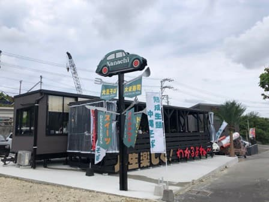
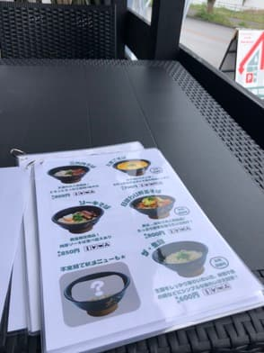
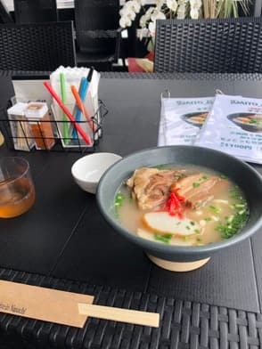

2023년 5월에 먹으러 갔습니다. 서핑 포인트(이토만시 수어사이드 클리프 포인트)를 오가는 길인 현도 7호선 변에 최근 오픈해서 궁금했습니다😄

주차장에 차를 세우자마자 가게 분이 알아채고 일부러 밖까지 나와서 맞이해 주셨습니다^^; 뭔가 부끄럽^^;
밖의 깃발을 보니, 동쪽? 미나미다이토섬 쪽 분인지, '다이토 소바'와 '다이토 스시'를 내세우고 있는 것 같습니다.

가게에 들어가면 바로 터치패널식 기계가 설치되어 있고, 선불 방식. 오키나와 소바 가게는 아직도 현금만 받는 가게가 많은 인상인데, 이곳은 최근 오픈한 것도 있어서 스마트폰 결제가 가능했습니다😊 좋은 느낌입니다. 음식점은 빨리 캐시리스가 됐으면 좋겠네요.
이번에는 가게 분이 추천해 주신 '나나치 스페셜(1,100엔)'을 면 곱빼기(+100엔)로 주문.

돼지뼈 육수가 잘 우러난 국물에, 깃발에는 '숙성 생면'이라고 쓰여 있었는데, 면은 굵은 꼬불 면으로 반짝반짝, 쫄깃쫄깃해서 먹는 보람이 있는 느낌입니다. 다른 가게에는 없는 면의 느낌이라 맛있습니다😋 건더기는 돼지갈비(소키), 삼겹살 조림(산마이니쿠), 어묵(가마보코), 붉은 생강 초절임과 파는 터치패널로 선택하는 방식이었습니다.
평가(10점/15점): 굵은 꼬불 숙성 생면은 다른 가게와 비교해도 맛있었습니다. 건더기와 국물은 무난하게 맛있는 느낌입니다. 다만 +100엔으로 면 곱빼기로 했는데, 양은 곱빼기 느낌은 아니네요. 가격도 다른 가게에 비하면 조금 비싼 편일지도요.(반대로 다른 가게가 너무 싼 건지도 모르겠네요^^;)
귀여운 공 모양? 다이토 스시는 다이토섬에서 직송한 생선을 사용하는 것 같고, 메뉴판 사진은 맛있어 보였습니다🤤
면: ★★★★☆（4）
수프: ★★★☆☆（3）
토핑: ★★★☆☆（3）